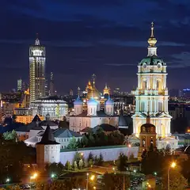
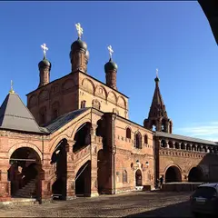
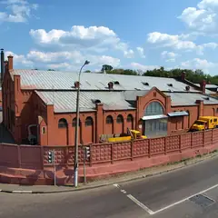

Спа с хаммамом · ЦАО
Пьюр СПА
Восточный спа у «Пролетарской»: хаммам-ритуалы от турецких мастеров, гидромассажный бассейн, программы для двоих и девичники до 12 подруг. 10–22.
- ₽₽₽ · дороже 3 000 ₽ на человека
- Новое в каталоге
- в 2 планах
Позвать сюда: Пьюр СПАОткрыть в каталоге: Пьюр СПАМаршрут до места: Пьюр СПА
Адрес и детали
- Адрес
- Стройковская ул., 17/1
Открыть на Яндекс Картах (в новой вкладке) - Метро
- м. Пролетарская
- Округ
- Центр (ЦАО)
- Цена
- дороже 3 000 ₽ на человека
- Проверено
- работает — проверили в октябре 2026
Планы с этим местом 2
- Московский кёрлинг-клуб · Кёрлинг-клуб · м. Волгоградский проспект
- 14 минут пешкомПьюр СПА · Спа с хаммамом
Тренеры-чемпионы научат скользить и закручивать камень, а потом минут пятнадцать пешком — и восточный «Пьюр СПА» с хаммамом и программами для двоих.
Открыть план: Кёрлинг и хаммамПозвать сюда: Кёрлинг и хаммам
- Пьюр СПА · Спа с хаммамом · м. Пролетарская
- 22 минуты пешкомРогожский рынок · Рынок и фудкорт
Хаммам-ритуалы от турецких мастеров в «Пьюр СПА» — девичник до 12 подруг, — а потом Рогожский рынок: устрицы, паста или левантийская кухня, каждая выбирает своё.
Открыть план: Хаммам и поздний обед на рынкеПозвать сюда: Хаммам и поздний обед на рынке
Похожие рядом
Что ещё рядом
- Московский кёрлинг-клубКёрлинг-клуб · ≈ 14 минут пешком
- Станция 2025Лазертаг · ≈ 14 минут пешком
- Театр на МельниковаТеатр · ≈ 14 минут пешком

Новоспасский монастырьМонастырь · ≈ 18 минут пешком
Крутицкое подворьеАнсамбль XVII века · ≈ 19 минут пешком
Музей водыМузей · ≈ 20 минут пешком
Как позвать
- Выбери план, место или событие — в карточке адрес, цены и маршрут в Яндекс Картах.
- Нажми «Позвать сюда» — соберётся приглашение-игра для свидания или голосование для компании.
- Отправь ссылку в любой мессенджер: тебе ответят, а компания отметит, куда и когда может. Бесплатно и без регистрации.